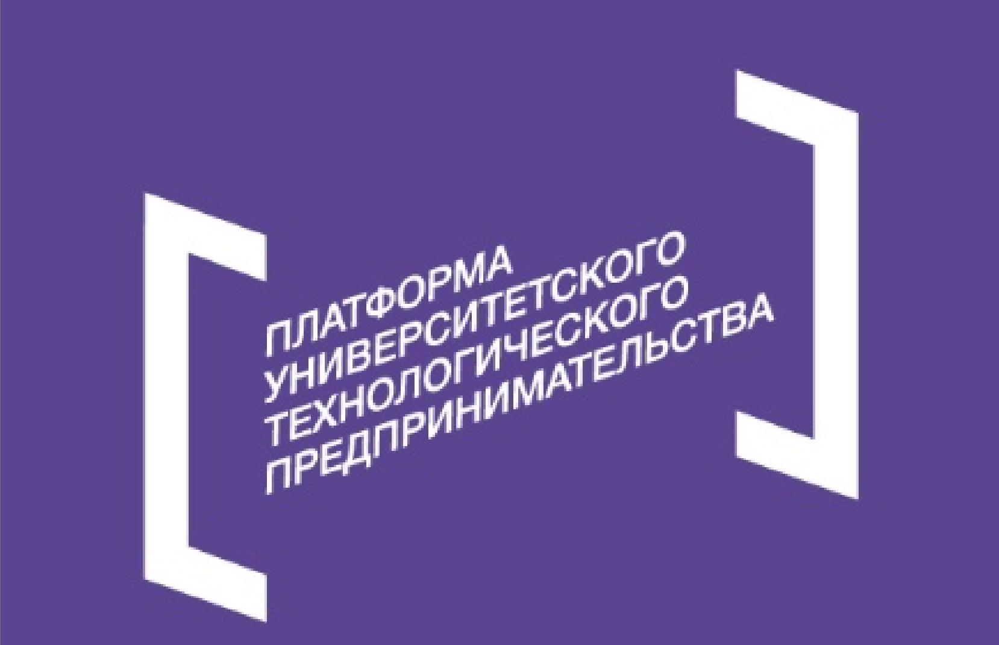

Мониторинг стресса и выгорания сотрудников — до того, как это станет проблемой
Aikeep анализирует мимику, голос, позы, пульс, текст и поведенческие паттерны сотрудников на онлайн-конференциях и созвонах — и превращает это в понятные HR-метрики и персональные рекомендации для команды.
Выгорание обходится компании дороже, чем его предотвращение
Выгорание и хронический стресс — одна из главных причин увольнений и снижения продуктивности в командах, работающих в удалённом и гибридном формате. Уровень вовлечённости сотрудников при этом часто остаётся ниже нормы, а замена ушедшего специалиста обходится компании значительно дороже, чем его удержание.
Текущие способы оценки состояния сотрудников — анкеты и опросы — субъективны, проводятся редко и не дают HR-отделу объективной картины в реальном времени. Aikeep закрывает этот пробел, предоставляя аналитику на основе объективных данных: мимики, голоса и поз в онлайн-встречах.
Мультимодальный анализ без дополнительного оборудования
Платформа объединяет несколько источников данных, чтобы оценка состояния сотрудника была точнее, чем у решений, использующих только один канал анализа.
Мимика
Компьютерное зрение распознаёт микровыражения лица на видео в ходе созвонов.
Голос
Модели машинного обучения анализируют тон, темп и интонации речи.
Позы и пульс
Анализ позы и физиологических сигналов — по видео, без датчиков и носимых устройств.
Текст и поведение
Учитываются переписка и поведенческие паттерны активности в рабочих коммуникациях.
Для работы платформы достаточно стандартной веб-камеры и микрофона — Aikeep не требует дополнительного оборудования и легко внедряется в существующую инфраструктуру видеосвязи.
Один инструмент — польза для HR и для сотрудников
Для HR-отдела
- Обезличенные метрики: уровень стресса, вовлечённость, риск выгорания
- Аналитика по командам для обоснованных кадровых решений
- Интеграция с корпоративными HR- и коммуникационными системами через API
- Веб-интерфейс с личным кабинетом для HR-специалистов
Для сотрудников
- Персональный кабинет для отслеживания своего эмоционального состояния
- Персонализированные рекомендации по восстановлению и снижению стресса
- Инструменты для самостоятельного управления самочувствием и работоспособностью
Почему Aikeep
Ниже текучесть
Раннее выявление рисков выгорания снижает число увольнений.
Выше вовлечённость
Своевременная поддержка сотрудников улучшает командные показатели.
Экономия бюджета
Удержание специалиста обходится дешевле, чем поиск и найм нового.
Сильный HR-бренд
Забота о благополучии сотрудников усиливает репутацию работодателя.
Выше точность
Мультимодальный анализ точнее решений, использующих один канал данных.
Проект реализован при поддержке Фонда содействия инновациям в рамках программы «Студенческий стартап» мероприятия «Платформа университетского технологического предпринимательства» федерального проекта «Технологии».
